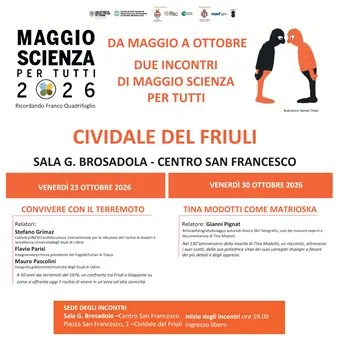

da ven 23 ott a ven 30 ott · dalle 19:00
Maggio Scienza per tutti - Incontri di Ottobre
Incontri di Ottobre della rassegna scientifico-culturale a cura della Storica Società Operaia di Mutuo Soccorso e Istruzione SOMSI di Cividale del Friuli
 Indicazioni
Indicazioni
- Costi e prenotazioni
- Costo non indicato · Prenotazione non indicata
- Programma
- Programma da verificare. Apri la fonte ufficiale per orari e possibili aggiornamenti.
- In caso di maltempo
- Nessuna indicazione specifica pubblicata.
- Note
- Acquisito automaticamente dalla fonte.
L’EVENTO
Descrizione completa
Incontri di Ottobre della rassegna scientifico-culturale a cura della Storica Società Operaia di Mutuo Soccorso e Istruzione SOMSI di Cividale del Friuli
Programma:
Venerdì 23 ottobre, ore 19:00 - Centro San Francesco Quando la terra trema: dal terremoto del Friuli ai terremoti in Giappone. Quali prevenzioni del rischio? Stefano Grimaz, Mauro Pascolini e Flavio Parisi, si confrontano a distanza su come, dopo l’esperienza dei terremoti del maggio e del settembre 1976 del Friuli, si affronta oggi il rischio di vivere in un’area ad alta sismicità nell’esperienza italiana e del Giappone. Il Giappone rappresenta un riferimento internazionale per le tecniche costruttive antisismiche, i sistemi di allerta e, soprattutto, per l'educazione della popolazione, che fin dall'infanzia impara come comportarsi prima, durante e dopo una scossa. Partendo dalla lezione di quanto successo si affronta con esempi concreti i passi avanti fatti nella riduzione del rischio sismico, dei comportamenti da adottare e di come si possa vivere in sicurezza con l’Orcolàt.
Note sui relatori:
Stefano Grimaz: Cattedra UNESCO sulla Sicurezza intersettoriale per la riduzione del rischio di disastri e la resilienza. Università degli Studi di Udine.
Flavio Parisi: Insegnante e scrittore, presidente del Fogolâr Furlan di Tokyo.
Mauro Pascolini: Geografo, già docente Università degli Studi di Udine
Venerdì 30 ottobre, ore 19:00 - Centro San Francesco
Tina Modotti “Matrioska”. A 130 anni dalla nascita
Gianni Pignat racconterà la vita e le opere della grande fotografa friulana. Il 16 agosto 1896 al numero 113 di via Pracchiuso a Udine, vedeva la luce Assunta Adelaide Modotti, diventata poi famosa come Tina. Una figura poliedrica, attrice di teatro e di cinema, ma soprattutto fotografa, intellettuale, impegnata politicamente, militante e rivoluzionaria. Il racconto vuole proporre, attraverso le immagini dei suoi scatti la sua attenzione verso il mondo contadino e operaio, quello dei bambini e degli ultimi con una sensibilità rivolta alla solidarietà.
Gianni Pignat: Artista e fotografo di viaggio, autore di diversi libri fotografici, uno dei massimi esperti e documentarista di Tina Modotti.
A cura della Società Operaia di Mutuo Soccorso
Per maggiori informazioni: tel. 0432 734116; mail: info@somsicividale.it
IL PROGRAMMA
Programma e orari
Appuntamenti raccolti dalle fonti elencate. Dove manca un orario, non è ancora disponibile in questa scheda.
Programma pubblicato
- Dal 2026-10-23 al 2026-10-30
INFORMAZIONI UTILI
Prima di partire
- Controllare la fonte prima di partire.
ORGANIZZAZIONE